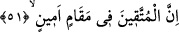

Çünkü Allah’ın azâbından emin olmak küfürdür.
Mesnevî’ de şöyle denilmiştir:
Bâyezid zamanında bir kâfir vardı, bir Müslüman ona dedi:
Ne olur Müslüman olsan da yüzlerce kurtuluşa erişsen.
Kâfir dedi ki: “Ey mürîd! Bu îman eğer Bâyezid’in îmânıysa
Buna can dayanmaz, o benim çabamın çok üstündedir.
Dîne, inancım olmasa da, onun îmânına adam akıllı inanmaktayım.
Ağzım üstünde bir mühür var, fakat gizliden îmânım var.
İstediğiniz sizin îmânınız gibi bir îmânsa, ona meylim yok.
Çünkü îmâna yüzlerce meyli olan, sizi gördü mü soğur gider.
Çünkü sizin îmânınızda sadece bir ad görür; mânâ yok.
Bu durum ise, çöle kurtuluş yeri demeye benzer.
Burada şuna da işâret edilmektedir ki, mürîdin îmânı, ilmi ve mârifeti ne kadar
kuvvetli olursa zâhirî ameli ve gayreti de o nisbette olur. Var sen durumu zayıf, şüphe ve
tereddüd içinde olanın hâlini buna kıyas et! Her şeyden münezzeh olan Allah’tan bizlere
yakîn kadehinden içirmesini dileriz. Zîrâ feyiz veren de, yardım eden de O’dur.
51. Müttakîler ise hakîkaten güvenli bir makamdadırlar.
Küfür ve mâsıyetlerden “Korunanlar” Allah’a itâat eden mü’minler “ise güvenli bir
makamdadırlar”. Makam, kıyâm yeri demektir. Bundan murâd mutlak mekândır. Çünkü
makam kelimesi, kullanımı umûm mânâsında yaygın olan husûsî lafızlardandır. Yani bu
kelime geneldir ve bütün mekânlar için kullanılır. Hatta hiç kıyâm olmasa bile oturma
mevkîine de makam denilir.
“Güvenli” sahibinin her türlü âfetten ve oradan başka yere nakledilmekten emin
olduğu demektir. Buna göre makam kelimesini emin olmakla nitelemek mecâz-i
isnâdîdir. Emin olmak korkmanın zıddıdır. Emîn güven sahibi demektir.
Zemahşerî burada başka bir veche daha işâret etmektedir ki o da şudur: Emîn
hıyânetin zıddı olan emânet kökünden alınmıştır. Bu durum ise gerçekte mekânın değil,
mekân sâhibinin sıfatıdır. Fakat istiâre-i tahyîliye yapılarak burada mekânın sâhibi
değil, bizâtihî kendisi emîn sıfatıyla sıfatlanmıştır. Sanki korkulu mekân oradaki nâhoş
durumuyla sahibini ve o mekâna geleni üzmüş olmaktadır; yahut burada kinâye
yapılmaktadır. Çünkü bir sıfat kişinin mekânı husûsunda doğrulandığı zaman, kişinin
bizzat kendisi hakkında da doğrulanmış olur. Yani mekân eminse sahibi de emindir.
Arapların “Şeref onun elbiseleri, cömertlik ve üstünlük onun ridâları arasındadır”